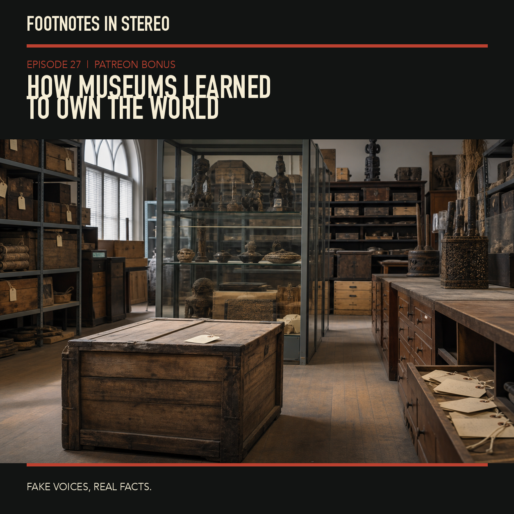

Episode 27 · Patreon bonus
Who owns the world's stolen history
Mira and Theo compare the British Museum’s specific disposal rules with the U.S. NAGPRA process for certain Native American and Native Hawaiian human remains and cultural items. They examine consultation, custody versus control, the Smithsonian’s separate statutory route, and the difference between legal duties and moral interpretations. This source-grounded historical discussion is not legal advice or a claim that either law governs every museum or return request. Created with Gemini Notebook. The conversation and voices in this episode were generated with Gemini Notebook. Fake voices, real facts.
Sources
Transcript
Machine transcript; lightly formatted and subject to correction.
The full episode is available on Patreon. Its audio and transcript are not published in this public archive.